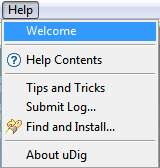
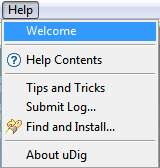

Welcome¶
The welcome page is shown when you launch uDig for the first time. It contains links to online help and the uDig website.

You can open up the the Welcome page at any time using Help ‣ Welcome from the menu bar.
The welcome page is shown when you launch uDig for the first time. It contains links to online help and the uDig website.
You can open up the the Welcome page at any time using Help ‣ Welcome from the menu bar.
